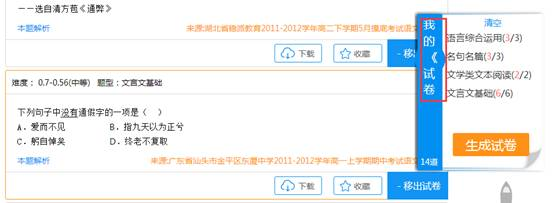
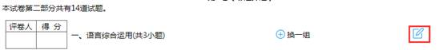
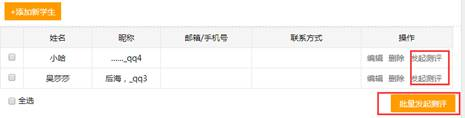

一、注册和登陆
A.用户注册
A-1.打开网站（http://www.haxueku.com/），注册老师/学生账号，点击网站首页右上角“注册”，进入注册页面
A-2.点击注册老师/学生用户按钮，进入注册页面，默认为手机号注册，填写手机号、昵称、密码、确认密码、手机激活码（获取短信激活码），选择“我已阅读并同意”，点击“注册”完成
A-3.进入注册页面，在右下方可以选择“使用邮箱注册”
A-3-1.选择邮箱注册，填写邮箱、昵称、密码和确认密码，选择“我已阅读并同意”，点击“注册”完成
A-3-2.注册完成后，请您进入你的注册的邮箱进行激活
A-3-3.进入邮箱，点击激活链接进行激活。激活成功后自动跳转为：您已激活成功，欢迎您回来！
A-4.完成注册，进入个人中心完善个人信息
B.登陆（方式一）
B-1.打开网站（http://www.haxueku.com/）点击网站首页右上角“登录”进入登录页面；
B-2.输入用户名（即为注册时使用的邮箱或者手机号）和密码，进行登录。
B-3.登录成功，进入个人主页。
C.登陆（方式二 ）
C-1.输入用户名（即为注册时使用的邮箱或者手机号）和密码，进行登录。

C-2.登陆成功，进入个人主页
D.快速登入
D-1（方式一）登入首页，点击QQ图标。进入QQ登陆页面，使用QQ手机版扫描二维码，或者输入QQ账号登陆，
D-2.（方式二）登入首页，点击微信图标。进入微信登陆页面，使用手机扫描二维码登陆
D-3.（方式三）登入首页，点击微博图标。进入微博登陆页面，使入账号密码或者手机扫描二维码登陆
二、组卷。
A.手工组卷
A-1.登录账号后，点击“组卷”选择手工组卷，进入手工组卷页面（即进入题库页面）
A-2.选择组卷科目。点击“题库”，从中选择你要的科目。或者在“题库”下方的“切换科目”中选择科目。
A-3.确定科目，对类型、地区、年份、知识点进行选择。
A-4.试题筛选。选择题型、难度 、排序，过滤使用过的题目和选收藏的试题
A-5.试题选择。点击“加入试卷”选择所需要的试题。

A-6..加入的试题，在网页右侧“我的试卷”中显示。

A-7.生成试卷。选定好试题后，点击“生成试卷”。
A-8.进入组卷页面。选择样式
A-8-1.头部编辑。在试卷主标题边点击，出现头部编辑对话框，可以在这里进行标题修改，添加副标题，设置时间。
A-8-2.题型编辑。在每一题型名称尾部点击，出现题型编辑对话框，可进行题型名称修改，设置分值。

A-8-3.可以单独对试题设置分值、选题、删除、上移和下移进行选择
A-8-4.点击“换一组”按钮。对这个题型的所有题目进行更换
原来的题目，点击“换一组”
换一组后的题目
A-9.试卷、答题卡的保存与下载。
A-9-1.试卷编辑完成后，点击保存试卷按钮，试卷自动保存在“我的组卷”，方便查询。
A-9-2.下载试卷。点击“生成试卷”，出现生成试卷对话框，对纸张大小与试卷类型选择后，点击“生成word试卷”，选择试卷保存位置。
A-9-3.下载答题卡。点击“生成答题卡”，在生成答题卡对话框里选择模板，确定下载，选择答题卡保存的位置。
A-10.手工组卷结束，下载试卷与答题卡完成，进行打印。
B.智能组卷
B-1.登录账号后，点击“组卷”选择智能组卷，进入智能组卷页面，选择科目、试卷难易程度。
B-2.选择知识点，题型与题目数量。选择完后，点击“开始组卷”
B-3.进入组卷页面，选择样式（详见手工组卷A-8）
B-4.试卷、答题卡的保存与下载（详见手工组卷A-9）
B-5.智能组卷结束，下载试卷与答题卡完成，进行打印。
三、试卷
A-1.登录账号后，点击“试卷”的按钮，进入试卷的页面。
A-2.进入“试卷”页面，您可以对科目进行切换，针对自己需要的年份、年级、地区、各种类型的试卷筛选后进行下载与考试
B-1.选择试卷，点击“考试”
B-2.进入考试页面，进行在线练习
B-3.完成在线练习的题目后，点击答题卡下方“测试完了，交卷”，如果您没有做完试题就提交，页面会跳出弹窗，提示您是否交卷；如果您试题全部完成，弹窗会提示您检查。
B-4-1.“确认交卷”完成后，跳回“学习中心”页面，在”我的练习”里点击“已完成”进行
查看
B-4-2.进入考试页面后，未进行在线练习或练习未完成就退出，该试卷自动保存在学习中心“我的练习”里，在“未完成”里可进行继续完成
C-1在“试卷”里，对自己需求的条件筛选后，直接点击试卷，进入组卷页面
C-2试题选择。点击“全部加入我的试卷”，或者在试题的下方单题选择“加入试卷”，右边的我的试卷栏里就会显示出来，你所选择的试题，
C-3试题选择完后，点击“生成试卷”，进入试卷页面后，你可以对试卷进行编辑，下载（详见二、手工组卷A-8、A-9）
四、在线练习（学生）
1、登录账号后，点击“在线练习”的按钮，进入在线练习的页面
2、在线练习页面。您可以选择想要练习的科目、教材/知识点选题、试题的难易系数和试题数量进行选择。确定无误后，点击选择“开始练习”按钮，进行在线练习
3、进入页面，开始练习（详见三试卷、B-2）
4、完成试卷（详见三试卷、B-3）
5、查看（详见三试卷、B-4-1、B-4-2）
五、组课（老师）
1、登录账号后，点击“组课”的按钮，进入组课的页面。
2、选择科目，对教材版本、教材知识点、模块进行筛选。对于自己需要的资源，可以进行收藏。对于使用过的题目可以进行过滤。
3、筛选后选择自己所需要的学案，点击“加入学案”/“移出学堂”，右边我的学案信息栏就会显示你选择的类型与数量。
4、生成学案后，进入学案页面。可以对学案内容进行排序编辑（上移、下移、删除）
5、生成学案后，可以对该学案保存、下载、发送学生
5-1.点击“保存”，在“学习中心—组课记录”进行查询与操作
5-2.下载学案。点击学案页面“下载”或在“组课记录”里操作“下载课件”，选择该学案的保存位置

5-3.组课结束，下载完成，可以进行打印
5-4.学案发送学生。点击学案页面“发送学生”，选择学生进行发送
1.我的收藏
2.我的错题。在线练习后，做错的题目都保存在我的错题里。可以查看到我的答案与正确答案，也可以对该题目进行移除或重新进行组卷
3.我的测评。进入我的测评，可以查看到老师发起的测评和完成情况。

3-1.选择“未完成”，点击”继续完成“，进行测评
3-2.在测评页面，您可以在这里查看到测评的时间，进行答题
3-3.提交测评。确定试题无误，点击“我做完了，交卷”，提交测评。若您没有完成试题，会跳出弹窗提醒您是否确认交卷。确认无误后，测评试卷成功提交。

3-4.提交测评后，系统会自动跳转到测评页面，点击“查看”查看测评结果。这里会对题目进行批改，同时提供正确的答案与解析
4.我的练习。所有在线练习的完成或未完成的试卷都保存在这里，方便以后查询。
5.组卷记录。组卷完成后的试卷都保存在里，方便查询。
6.我的报告。针对“我的测评”试卷，进行详细分析报告
6-1.选择科目，首先查看到您此科目测评的平均分数、错误率、答卷时间和评分等级
6-2.试卷基本分析。您在这里可以查看到试卷名称、试题数量、总分、答题时间、知识点，查看报告与原卷
6-3.您在这里可以充分了解知识点掌握情况。
七、学生中心（老师）
1.我的收藏。题库里收藏的题目都在这里，方便查询与运用。
2.我的测评。组卷完成后发送给学生的试卷自动保存在“我的测评里”，可以对测评试卷进行查看、分析、改卷。
2-1.点击“查看”，页面跳回已测试完试卷。这里可以看到测评后每道题目的平均得分，点击“本题解析”你可以看到更加详细的试卷讲评。
点击“选项”，可以查看到选择每个选项的学生名单与人数。
2-2.点击“分析”。进入分析页面，可以看到综合分析、成绩分析、试题分析、知识点分析。
2=2-1.综合分析。您可以查看到您本次测评的试卷基本信息、平均分、错误率、答题时间、评分等级和成绩统计，便于您充分了解本次测评学生的成绩信息。
2-2-2.成绩分析。您可以查看到本次测评学生的成绩排行、错题和错题知识点。
2-2-3.试题分析。在这里您可以查看每道试题的错误率、难度系数、知识点、做错的学生。
2-2-4.知识点分析。在这里您可以查看到知识点、分值比例、错误率、对应试题和做错的学生。
2-3.改卷。点击“改卷”，进入试卷批改页面。
2-4.点击“布置新测评”，页面跳回组卷页面，进行组卷（详见二、组卷）。
3.组卷记录。组卷完的试卷都保存在这，方便查询
4.组课记录，组课的学案都保存在这，方便查询
5.我的学生。
5-1.点击“添加新学生”后弹出对话框，在对话框里输入学生的账号（即昵称）与姓名，点击确定，添加成功。
5-2.选择学生，发起测评

5-3.点击“发起测评”，网页跳转“组卷”页面，开始进行组卷（详见二、组卷）。